Twelve canyon-high-point parks above the Santa Monica Mountains residential edge. One signed federal-state firebreak compact. The fire-prevention plan disguised as a park plan.
Make no little plans. They have no magic to stir men's blood and probably will not themselves be realized. Make big plans. Aim high in hope and work.
Daniel Burnham, 1910
After the Great Chicago Fire of 1871, Daniel Burnham did not rebuild the fire department. He rebuilt the city. Wider streets. Fireproof materials. Parks as firebreaks. The 1909 Plan of Chicago was a fire-prevention plan disguised as a city plan.
Los Angeles, scorched by the deadliest wildfires in its recorded history, has the same opportunity now. The question is whether it will act like Chicago in 1872 or Chicago in 1870.
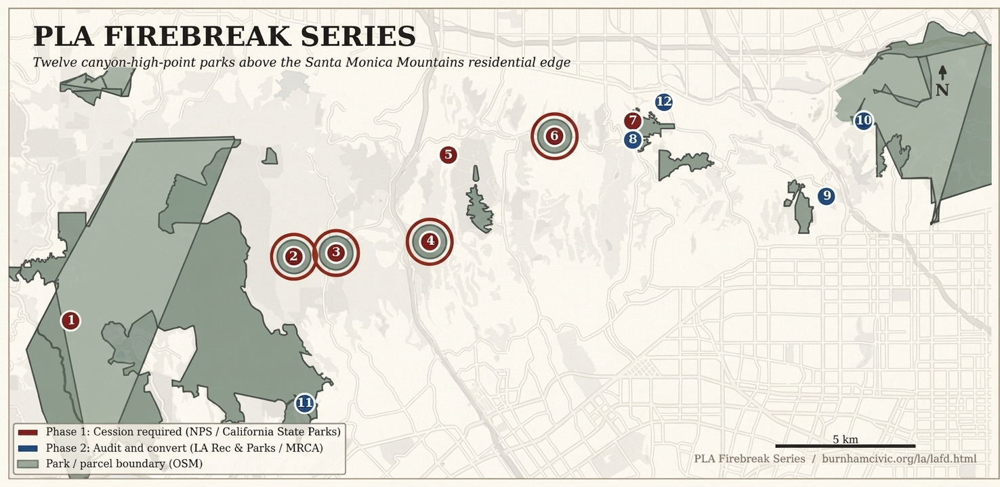
The receipt
Structures destroyed
6,837
Palisades fire, January 2025, in five days
Lives lost
12
Palisades + Eaton, January 2025
Santa Ynez Reservoir
EMPTY
117 million gallons offline when the fire started; offline AGAIN in 2026 for cover replacement
The water failed where the fire was hottest. LADWP has installed a temporary 6-mile, 10-inch hose from Topanga as a stopgap. The reservoir-reliability problem is a recurring failure, not a one-time event.
The series
Twelve canyon-high-point parks. Each one a graded firebreak that protects a named neighborhood from the next ignition. Phase 1 names seven new firebreak parks at canyon high-points currently held in a federal-state patchwork. Phase 2 names five existing public parks already on the right ground but configured for recreation, not fire suppression.
The 2025 Palisades Fire ignited inside this parcel, near Skull Rock trailhead in Topanga State Park. The cession blocker and the ignition-source parcel are the same parcel.
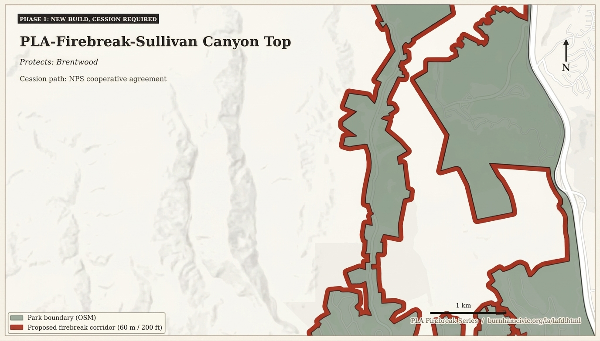
Park 2 of 12 Phase 1
Sullivan Canyon Top
Protects Brentwood, Brentwood Park, Kenter Canyon
Ridgeline fragmented across NPS, MRCA, the private Sullivan Canyon Preservation Association, and the City of LA. Parcel consolidation is the entry move.
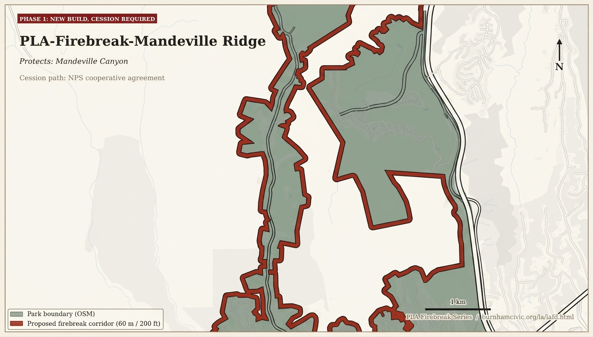
Park 3 of 12 Phase 1
Mandeville Ridge
Protects Mandeville Canyon
One canyon road, five miles deep, three thousand residents. The 1978 Mandeville Fire destroyed twenty-five homes and St. Matthew's Episcopal. The 2025 Palisades Fire was active here on January 11. A firebreak does not solve evacuation. Pair with second-egress hardening.
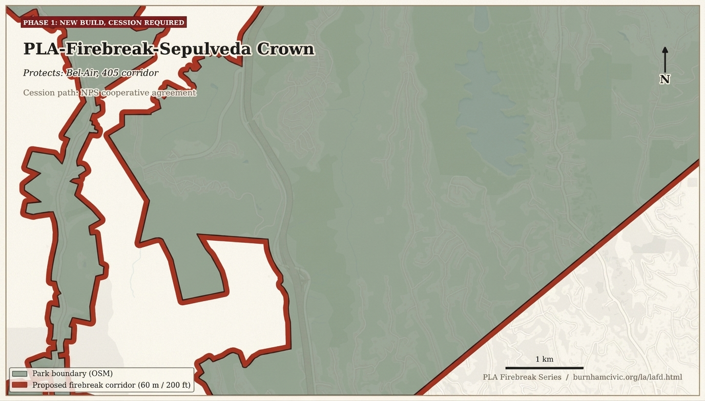
Park 4 of 12 Phase 1
Sepulveda Crown
Protects Bel-Air east of the 405, Casiano, Roscomare, the Getty Center campus
The 2017 Skirball Fire ignited here at a homeless cooking fire below Mulholland and ran 422 acres on offshore wind. The CEQA work from Skirball is a head start on the Section 4(d) and cat-ex packages this site needs.
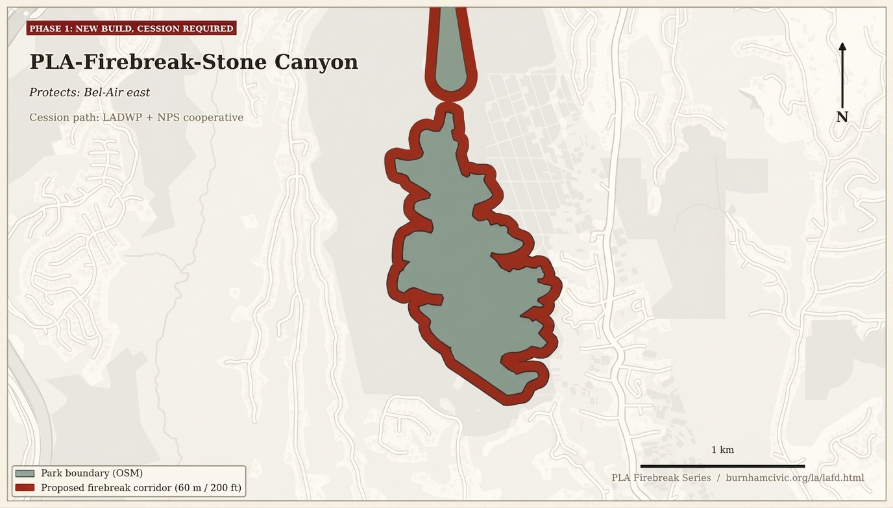
Park 5 of 12 Phase 1
Stone Canyon
Protects Bel-Air east
The 1961 Bel Air Fire ignited at the north end of Stone Canyon at 8:15 AM on November 6 from construction-crew brush burning. It ran west, destroyed 484 homes, burned 16,090 acres. The same reservoir served as a helicopter dip in 2025. Cession is not the unblock here. Reservoir reliability is.
Beverly Glen Boulevard is single-canyon-road egress for residents on the south face. Same evacuation profile as Mandeville. Same ignition-pattern template as the 2025 Sunset Fire.
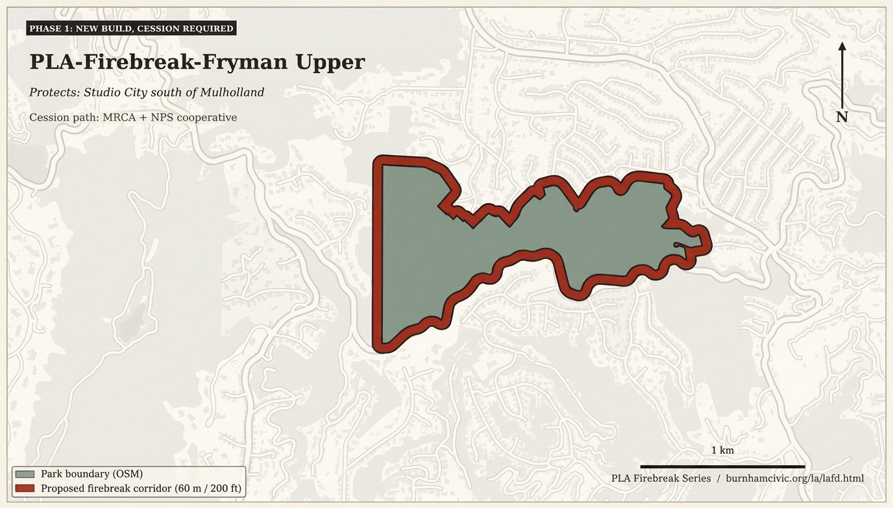
Park 7 of 12 Phase 1
Fryman Upper
Protects Studio City south of Mulholland, Sherman Oaks east
Mountains Conservancy already owns the parcel through MRCA. No federal cession required. The Betty B. Dearing Cross Mountain Trail runs through here, connecting four parks in one continuous corridor. The easiest of the seven Phase 1 sites to actually firebreak.
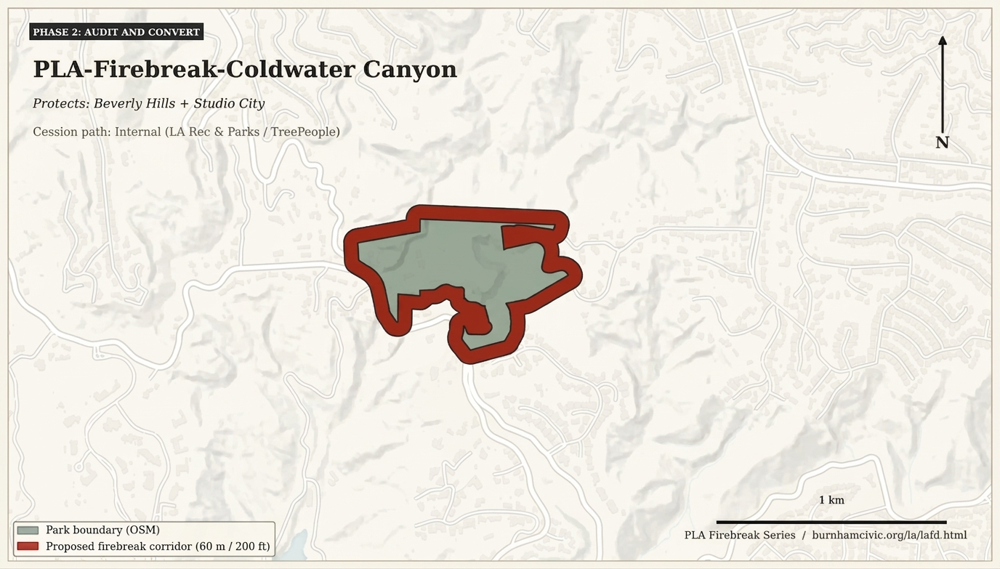
Park 8 of 12 Phase 2
Coldwater Canyon
Protects Studio City south, Beverly Hills north slopes, Benedict Canyon
LA Recreation and Parks has operated the site under agreement with TreePeople since 1977. Restored native chaparral, lower fuel load. The local partner is already in place. The audit asks whether the existing infrastructure meets the six-point Plumbed Park Standard.
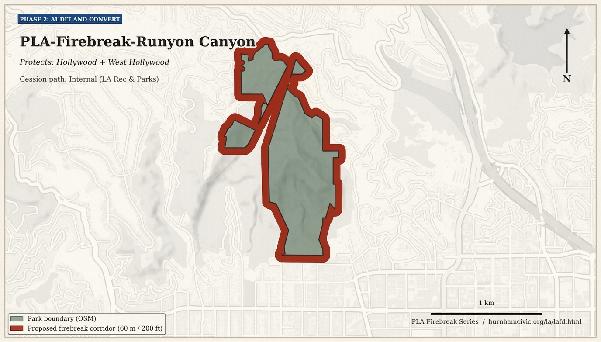
Park 9 of 12 Phase 2
Runyon Canyon
Protects Hollywood, West Hollywood, the Sunset Strip
Designated Very High Fire Hazard Severity Zone. The January 2025 Sunset Fire ignited along Solar and Astral Drives, burned 43 acres, evacuated the Walk of Fame and the Hollywood Bowl. A near-miss for the densest hill perimeter in the city.
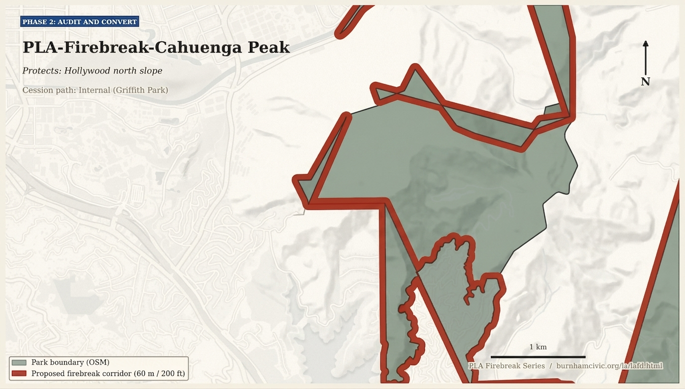
Park 10 of 12 Phase 2
Cahuenga Peak
Protects the Hollywood north slope, Lake Hollywood, Toluca Lake
The highest peak in Griffith Park at 1,820 ft. Existing helicopter access for Hollywood Sign maintenance is a head start on the helo refill point. The 2007 Griffith Park Fire burned 817 acres here; the WPA-era catch basins have reaccumulated brush since.
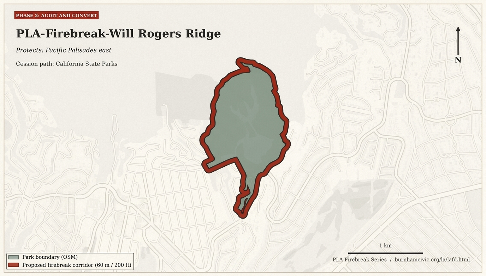
Park 11 of 12 Phase 2
Will Rogers Ridge
Protects Pacific Palisades east, the residential blocks rebuilding from the January 2025 fire footprint
99.5% of the park unit was burned in 2025. The 31-room Ranch House and the historic stables were destroyed. The park reopened in November 2025. Whatever standard is set here is the standard the rebuild meets.
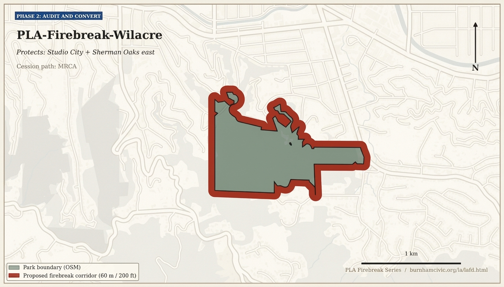
Park 12 of 12 Phase 2Demo project
Wilacre
Protects Studio City and Sherman Oaks east
128 acres on the north face of the Santa Monicas, already owned by MRCA. Connects to Fryman Upper, Coldwater Canyon, and Franklin Canyon along the Betty B. Dearing Cross Mountain Trail. Four parks, one continuous corridor, all four already in public hands.
Phase 0: the Cross Mountain Trail demonstration
Wilacre, Fryman Upper, Coldwater Canyon, and Franklin Canyon. Four parks, one continuous corridor along the Betty B. Dearing Cross Mountain Trail, all four already in public conservancy or LA Recreation and Parks hands. No federal cession required. TreePeople is the natural local partner, having operated Coldwater since 1977.
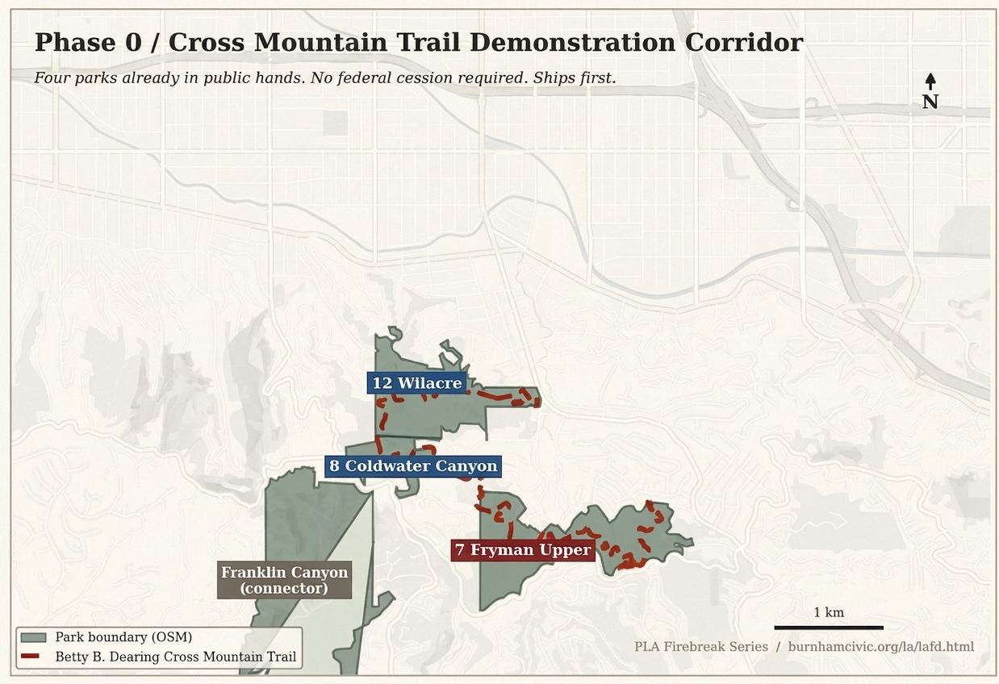
The four-park demonstration corridor on the Betty B. Dearing Trail. All four parcels in public hands today. This is the project that ships first.
This is the project that ships first. Phase 0 demonstrates the Plumbed Park Standard on a corridor where every parcel is already public. No new acquisition, no federal compact, no consultation calendar. Pure capex against existing public ground. The cost-share of one Cross Mountain corridor is single-digit-percent of one fire's federal aid request.
The Plumbed Park Standard
Six points. Every park in the series funded against this standard. Every dollar of federal cost-share conditioned on it.
1. Cleared graded firebreakMechanical clearance of fuels along the ridgeline, graded to a standardized width. Annual maintenance cycles funded into the cooperative agreement, not deferred.
2. Fire-flow mainA dedicated fire-flow main at the ridgeline. Currently zero of the twelve sites have one. Sized for fire flow rather than domestic use only.
3. Helicopter dip and refill pointReliable, year-round water source for aerial assets. Stone Canyon shows the principle. The reservoir-reliability problem becomes a procurement problem.
4. Hardened evacuation infrastructureSecond-egress hardening on canyon roads. Mandeville and Beverly Glen are the test cases. A firebreak does not solve evacuation. Both are required.
5. Defensible perimeter on the residential edge200-foot mechanically cleared zone along the park boundary against the residential edge. Standardized across all twelve sites.
6. Native restoration in the cleared zoneCoastal sage scrub managed for fire behavior, not against it. Braunton's milkvetch germinates after fire and disturbance. Section 4(d) special rules let the firebreak help the population, not harm it.
Section 7 of the Endangered Species Act has been the regulatory bottleneck for two decades. The milkvetch germinates after disturbance. The gnatcatcher population is functionally extirpated from the corridor. Section 4(d) special rules are the unblock, not waivers and not lawsuits.
The federal-state compact
Two desks, one signature
Phase 1 names two desks: Burgum at Interior, Newsom in Sacramento. Five National Park Service cooperative agreements, two California State Parks compacts, one LADWP operational agreement. Pressure mechanism is the standard cost-share conditioning of California's pending FEMA and CDBG-DR tranches. None of it is novel. All of it is the standard federal-state administrative practice that built the Interstate Highway System.
Series total: $105M to $290M one-time capex, plus $3M to $9M annual operations. Reference: California's Palisades plus Eaton federal cost-share request runs to multiple billions. The full series prices at single-digit-percent of one fire's federal aid.
The dramatic facts
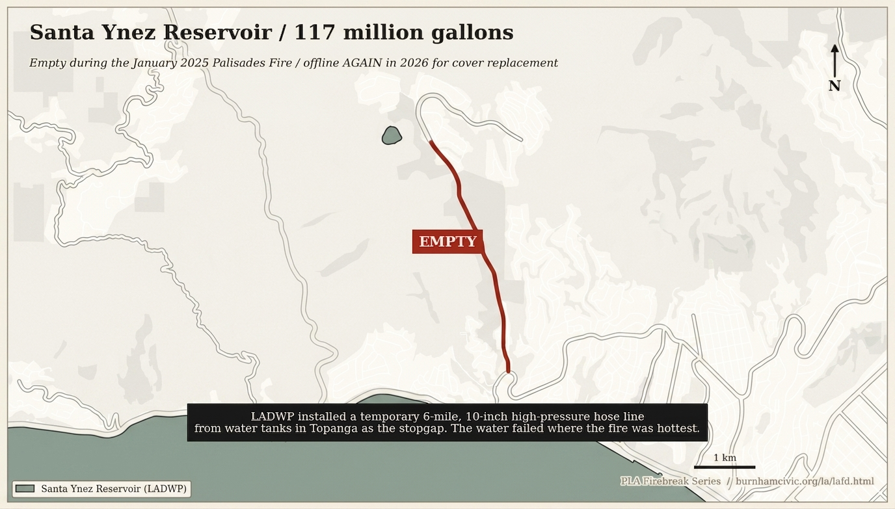
Santa Ynez Reservoir, empty when the Palisades fire started in January 2025. Offline again in 2026 for cover replacement. The recurring failure that LADWP's 6-mile, 10-inch hose from Topanga is currently masking.
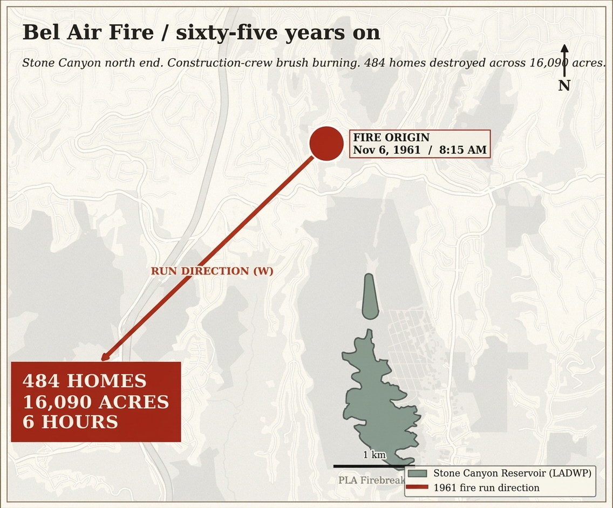
The 1961 Bel Air Fire. Ignited at the north end of Stone Canyon at 8:15 AM on November 6 from construction-crew brush burning. 484 homes destroyed, 16,090 acres burned, six hours.
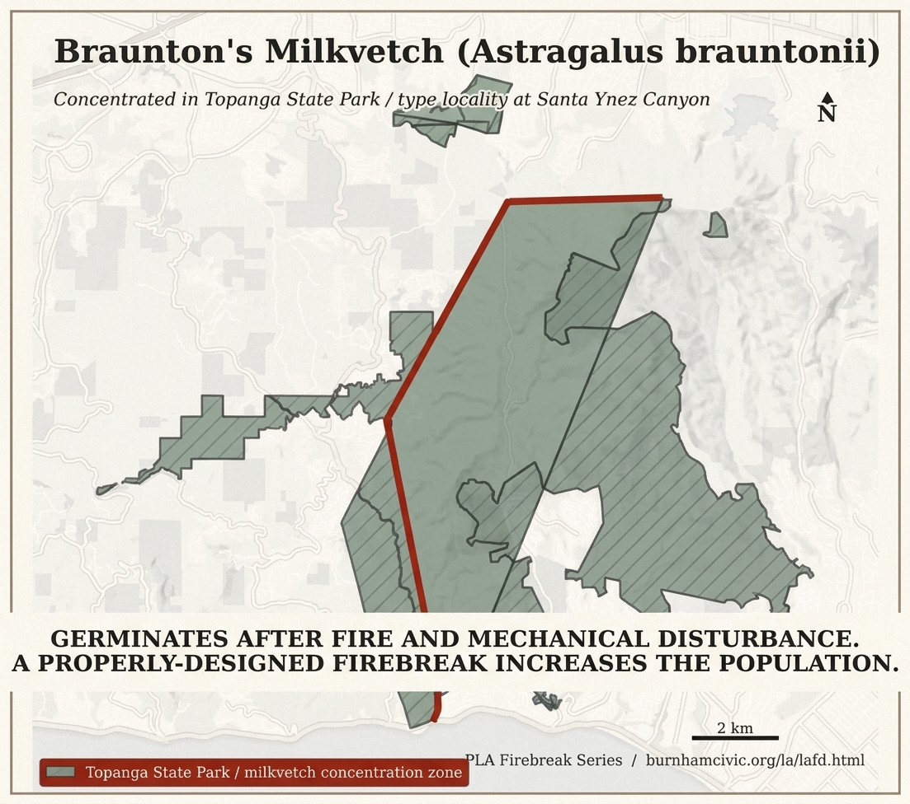
Braunton's milkvetch germinates after fire and mechanical disturbance. The two-decade Section 7 narrative has it backwards. The firebreak helps the population. Section 4(d) is the unblock.
The next mayor
The Plan of Chicago ran to 164 pages and took three years to produce. Los Angeles does not have three years. The rebuild of Pacific Palisades is already underway. The next mayor either delivers this compact or refuses, and the refusal becomes the campaign.
Burnham's lesson from the 1871 Chicago fire was structural, not operational. He did not call for more fire trucks. He called for a different city.
After Burnham, Chicago, 1909